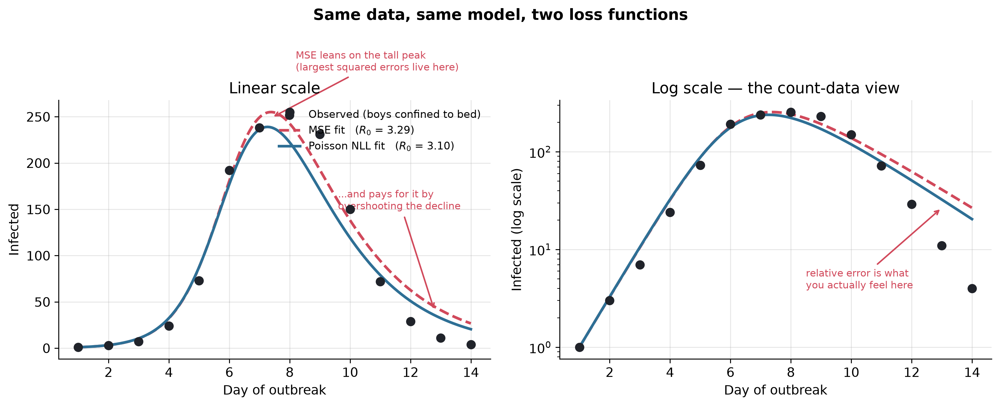

Lost in Translation: How Math Tribes Speak Different Languages (And Why Epidemiologists Hate MSE)
Statisticians, epidemiologists, ML researchers, and mathematicians all say ‘calibration’ — and all mean different things. Here is a phrasebook, and one number they will fight over.
Epidemiology
Statistics
Machine Learning
Mathematical Modeling
SIR Models
Python
Author
Ravi Kalia
Published
July 24, 2026
Lost in Translation
1 Calibration across four fields
The word calibration names different procedures in statistics, epidemiology, machine learning, and mathematics. Cross-disciplinary work fails when the same term is used without checking definitions.
Worked example: MSE vs Poisson negative log-likelihood on count data, fitted to the same SIR model.
2 Phrasebook
Same word, different meaning per field:
Concept
Statistician
Epidemiologist
ML / CS Researcher
Mathematician
Mechanistic
Parameters map to a data-generating process
Equations encode disease spread (SIR, contacts)
Hand-built simulator vs learned black box
Deterministic dynamical system (ODEs)
Stochastic
Randomness in a probability distribution
Chance in who infects whom
Dropout, mini-batches, Monte Carlo
Process on a probability space
Interpretable
Coefficients with effect size and CI
Biological parameters: \(R_0\), incubation, generation time
Post-hoc rationalisation (SHAP, attention)
Closed form or provable property
Calibration
Predicted probabilities match long-run frequencies
Tune mechanistic parameters to reproduce epidemics
Post-hoc score rescaling (Platt, temperature)
Constants chosen to meet boundary conditions
Training
Estimation (ML, least squares)
Usually “calibrating” to surveillance data
Gradient descent on weights
Minimising an objective
NLL
Negative log-likelihood (ML objective)
Loss respecting count generation
Cross-entropy
Functional to minimise
MSE
Gaussian log-likelihood with constant variance
Default that ignores count variance structure
Standard regression loss (\(L_2\))
Squared \(L_2\) norm of residuals
MSE and NLL are interchangeable menu entries in ML; the statistician treats them as the same object under different noise assumptions; the epidemiologist treats MSE as a route to wrong \(R_0\) on count data.
3 Parameter interpretation
Disagreement is about what a fitted parameter represents:
ML training: weights are coordinates with no external referent; permuting or rescaling can leave the function unchanged. Goal: small loss on observed data.
Epidemiological calibration:\(\beta\) (transmission) and \(\gamma\) (recovery) are biological claims. \(R_0 = \beta/\gamma\) is the basic reproduction number — threshold for outbreak growth vs decay.
Structural portability: calibrated \((\beta, \gamma)\) carry to new cities, pathogens, and interventions; trained weights do not. See companion post for a transfer example.
Leo Breiman’s Statistical Modeling: The Two Cultures (2001): data-modeling culture (stochastic model, interpret parameters) vs algorithmic-modeling culture (black box, prediction accuracy). The four-tribe confusion maps onto that split.
Loss function implication: when parameters are interpretable, the loss is an assumption about how data were generated. A wrong loss yields a plausible, wrong \(R_0\).
4 Boarding-school influenza data
Provenance: Daily counts of boys confined to bed during a January 1978 influenza outbreak at a boys’ boarding school in northern England. Published as “Influenza in a boarding school” (BMJ 1978;1:587). Standard SIR teaching dataset.
Why this dataset: closed population (\(N = 763\)), near-homogeneous mixing, short duration (14 days). Conditions match SIR assumptions more closely than typical field data.
Objective: estimate \(R_0\) by fitting \((\beta, \gamma)\) to daily infected counts.
Downstream impact:\(R_0\) drives school closure, vaccine sizing, and outbreak-control decisions. A 6% bias in \(R_0\) mis-scales intervention cost.
Why the loss matters here: observations are counts (variance grows with mean), span 1–255, and \(n = 14\) — no averaging rescues a wrong noise model.
Setup: imports and colour convention (red = MSE, blue = Poisson NLL).
Show the code
%config InlineBackend.figure_format ='retina'import numpy as npimport pandas as pdimport matplotlib.pyplot as pltimport seaborn as snsfrom scipy.integrate import odeintfrom scipy.optimize import minimizefrom scipy.special import gammalnplt.rcParams.update({"figure.dpi": 140,"savefig.dpi": 140,"font.size": 11,"axes.grid": True,"grid.alpha": 0.3,"axes.spines.top": False,"axes.spines.right": False,})sns.set_palette("deep")MSE_COLOR ="#d1495b"# redNLL_COLOR ="#2e6f95"# blueDATA_COLOR ="#20232a"# near-black
The outbreak itself is short enough to type out in full: the day number, and the number of boys confined to bed on that day.
Show the code
N =763# total boys in the school (closed population)outbreak = pd.DataFrame({"day": [1, 2, 3, 4, 5, 6, 7, 8, 9, 10, 11, 12, 13, 14],"infected": [1, 3, 7, 24, 73, 192, 238, 255, 231, 150, 72, 29, 11, 4],})outbreak.T
0
1
2
3
4
5
6
7
8
9
10
11
12
13
day
1
2
3
4
5
6
7
8
9
10
11
12
13
14
infected
1
3
7
24
73
192
238
255
231
150
72
29
11
4
Fourteen daily infected counts. Rise to peak 255 (day 8), then decline.
5 MSE vs Poisson NLL on count data
Two ingredients: a curve family (SIR) and a fit criterion. Both fits use the same model; only the loss differs.
MSE: equal weight per day; peak days dominate (squared residuals).
NLL: weight \(1/\lambda_t\); low-count days retain influence.
6 Fitting under both losses
Procedure: hold data and SIR model fixed; change only the loss; compare \(R_0 = \beta/\gamma\).
6.1 SIR simulator
odeint integrates from \(S_0 = N - 1\), \(I_0 = 1\), \(R_0 = 0\). Infected column floored above zero for log terms.
Show the code
def sir_infected(params, days, N=N, I0=1.0):"""Integrate the SIR ODEs and return predicted infected counts on `days`.""" beta, gamma = paramsdef deriv(y, t): S, I, R = y dS =-beta * S * I / N dI = beta * S * I / N - gamma * I dR = gamma * Ireturn [dS, dI, dR] y0 = [N - I0, I0, 0.0] # state at the first day: one index case sol = odeint(deriv, y0, days)return np.clip(sol[:, 1], 1e-8, None) # infected column, floored positive
6.2 Loss functions
Both losses reject negative \((\beta, \gamma)\). gammaln(observed + 1) computes \(\log(y_t!)\) without overflow; it does not shift the minimum.
6.3 Optimisation
Both fits start from \((\beta, \gamma) = (2.0, 0.5)\), Nelder-Mead. Summary: \(\beta\), \(\gamma\), \(R_0 = \beta/\gamma\), infectious period \(1/\gamma\).
Gap ≈ 0.19, driven mainly by \(\gamma\) (MSE ≈ 0.52 vs NLL ≈ 0.57).
6.4 Fit comparison
Left panel: linear scale. Right panel: log scale (equal relative errors appear equal-sized).
Show the code
fine_days = np.linspace(1, 14, 200)curve_mse = sir_infected(fit_mse.x, fine_days)curve_nll = sir_infected(fit_nll.x, fine_days)R0_mse = fit_mse.x[0] / fit_mse.x[1]R0_nll = fit_nll.x[0] / fit_nll.x[1]fig, (ax1, ax2) = plt.subplots(1, 2, figsize=(12, 4.9))for ax in (ax1, ax2): ax.scatter(days, observed, color=DATA_COLOR, s=48, zorder=5, label="Observed (boys confined to bed)") ax.plot(fine_days, curve_mse, "--", color=MSE_COLOR, lw=2.3, label=f"MSE fit ($R_0$ = {R0_mse:.2f})") ax.plot(fine_days, curve_nll, "-", color=NLL_COLOR, lw=2.3, label=f"Poisson NLL fit ($R_0$ = {R0_nll:.2f})") ax.set_xlabel("Day of outbreak")ax1.set_ylabel("Infected")ax1.set_title("Linear scale")ax1.legend(frameon=False, fontsize=9, loc="upper right")ax1.annotate("MSE leans on the tall peak\n(largest squared errors live here)", xy=(7.4, 249), xytext=(8.2, 300), fontsize=8.5, color=MSE_COLOR, arrowprops=dict(arrowstyle="->", color=MSE_COLOR, lw=1.3))ax1.annotate("...and pays for it by\novershooting the decline", xy=(12.8, 40), xytext=(9.6, 150), fontsize=8.5, color=MSE_COLOR, arrowprops=dict(arrowstyle="->", color=MSE_COLOR, lw=1.3))ax2.set_yscale("log")ax2.set_ylabel("Infected (log scale)")ax2.set_title("Log scale — the count-data view")ax2.annotate("relative error is what\nyou actually feel here", xy=(13, curve_mse[-1]), xytext=(8.5, 4), fontsize=8.5, color=MSE_COLOR, arrowprops=dict(arrowstyle="->", color=MSE_COLOR, lw=1.3))fig.suptitle("Same data, same model, two loss functions", fontsize=13, weight="bold")fig.tight_layout()fig.savefig("cover.png", dpi=200, bbox_inches="tight")plt.show()

Figure 1: The same 14 dots, the same SIR model, two loss functions. MSE (dashed red) leans on the tall peak and overshoots the low-count tail; Poisson NLL (solid blue) spreads its attention across every magnitude. The right panel puts the y-axis on a log scale — the natural habitat of count data — where the tail disagreement is impossible to miss.
On linear scale the curves look similar. On log scale MSE overshoots the decline (days 11–14); Poisson NLL tracks low counts.
7 Monte Carlo bias check
Single-dataset gap could be sampling noise. Simulation: treat observed counts as Poisson means; draw 200 replicates; fit each under both losses.
Generating process: \(y_t \sim \mathrm{Poisson}(\lambda_t)\) with \(\lambda_t\) equal to observed counts. Poisson variation matches count-data generation.
Expected bias: peak days carry highest Poisson variance (\(\sqrt{255} \approx 16\) at day 8); MSE weights absolute residuals, overweighting noisy peak days. MSE \(R_0\) should sit systematically high.
Show the code
rng = np.random.default_rng(0)truth = observedreps =200r0_mse, r0_nll = [], []for _ inrange(reps): y = rng.poisson(truth).astype(float) y[y <1] =1.0# keep at least one case for the log termsdef mse_l(p, y=y):if p[0] <=0or p[1] <=0:return1e12return np.mean((y - sir_infected(p, days)) **2)def nll_l(p, y=y):if p[0] <=0or p[1] <=0:return1e12 lam = sir_infected(p, days)return np.sum(lam - y * np.log(lam) + gammaln(y +1)) m = minimize(mse_l, start, method="Nelder-Mead").x n = minimize(nll_l, start, method="Nelder-Mead").x r0_mse.append(m[0] / m[1]) r0_nll.append(n[0] / n[1])r0_mse = np.array(r0_mse)r0_nll = np.array(r0_nll)mc = pd.DataFrame({"loss": ["MSE", "Poisson NLL"],"mean_R0": [r0_mse.mean(), r0_nll.mean()],"sd_R0": [r0_mse.std(), r0_nll.std()],"p5": [np.percentile(r0_mse, 5), np.percentile(r0_nll, 5)],"p95": [np.percentile(r0_mse, 95), np.percentile(r0_nll, 95)],})mc.round(3)
Figure 2: Estimated R0 across 200 synthetic outbreaks with fresh Poisson noise each time. MSE (red) sits systematically higher than Poisson NLL (blue); the two distributions barely overlap. Choosing the loss shifts the headline number by more than either estimator’s own sampling spread.
Findings:
MSE mean \(R_0 \approx 3.29\); Poisson NLL mean \(\approx 3.11\).
Each estimator’s sampling spread ≈ 0.06–0.08.
Loss-choice bias exceeds either estimator’s statistical uncertainty.
More data tightens CIs but does not remove loss-induced bias when the wrong noise model is used.
8 Summary
Loss function = claim about data generation. MSE: constant-variance Gaussian. Poisson NLL: count variance proportional to mean.
On this count data the difference moves \(R_0\) by more than sampling error.
Cross-field vocabulary (“calibration”, “training”, “NLL”) maps to different procedures; verify definitions before comparing fits.
Kermack, W. O., and McKendrick, A. G. (1927). A Contribution to the Mathematical Theory of Epidemics.Proceedings of the Royal Society of London A 115(772), 700–721.
“Influenza in a boarding school.” (1978). British Medical Journal 1(6112), 587.
McCullagh, P., and Nelder, J. A. (1989). Generalized Linear Models (2nd ed.). Chapman & Hall/CRC.